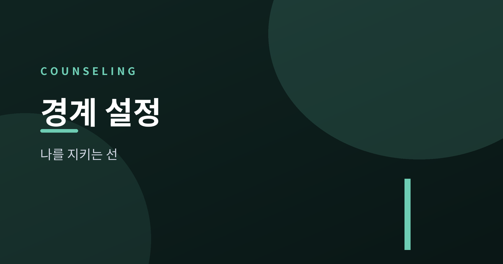
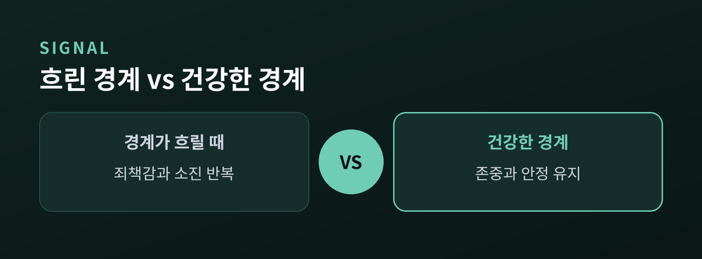
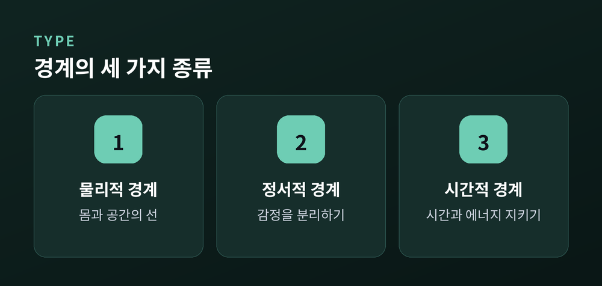
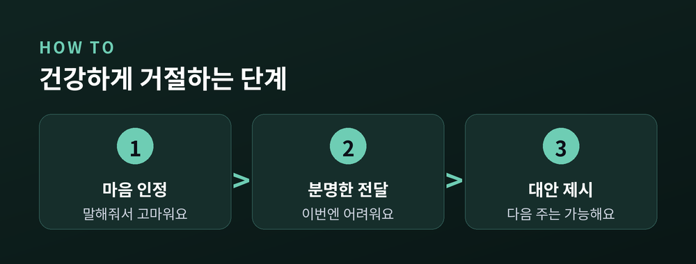
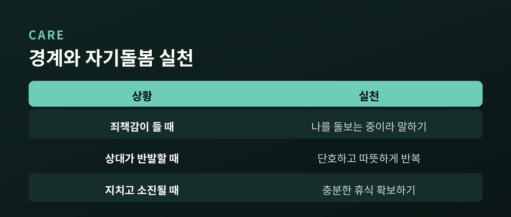

관계에서 나를 지키는 선 긋기

우리는 매일 크고 작은 관계 속에서 살아갑니다. 가족, 친구, 동료, 연인처럼 가까운 사이일수록 서로의 영역이 자연스럽게 겹치기 마련입니다. 그런데 이 겹침이 지나치면 나도 모르게 지치고, 어느 순간 "내가 원하는 것이 무엇이었는지" 조차 흐릿해지곤 합니다. 이럴 때 우리에게 필요한 것이 바로 건강한 경계(바운더리)입니다.
경계는 상대를 밀어내기 위한 벽이 아닙니다. 오히려 나와 상대가 오래도록 편안하게 관계를 이어가기 위한 부드러운 선에 가깝습니다. 선이 분명할수록 우리는 상대에게 휘둘리지 않고, 동시에 상대를 존중하며 다가갈 수 있습니다.
이 글에서는 경계가 무엇인지, 경계가 흐릿할 때 나타나는 신호는 무엇인지, 그리고 나를 지키면서도 관계를 해치지 않는 건강한 선 긋기를 어떻게 실천할 수 있는지 함께 살펴보겠습니다.
경계란 나와 타인을 구분 짓는 심리적, 관계적 선을 말합니다. 여기서부터는 나의 영역이고, 여기서부터는 상대의 영역이라는 것을 스스로 인식하는 것입니다. 건강한 경계를 가진 사람은 자신의 감정과 욕구를 존중하면서도, 타인의 감정과 욕구 역시 함부로 침범하지 않습니다.
중요한 점은 경계가 이기심이 아니라는 것입니다. 오히려 경계가 분명한 사람일수록 관계에서 솔직하고 안정적일 수 있습니다. 내가 감당할 수 있는 범위를 알고 그 안에서 진심으로 관계를 맺기 때문입니다. 반대로 경계가 없으면 겉으로는 헌신적으로 보여도 속으로는 원망과 피로가 쌓이기 쉽습니다.

경계가 흐릿해지면 우리 마음은 여러 방식으로 신호를 보냅니다. 대표적인 것이 과도한 죄책감입니다. 상대의 부탁을 거절하고 나면 마치 큰 잘못을 저지른 것처럼 오래도록 마음이 불편합니다. 사실은 정당한 거절이었는데도 말입니다.
다음은 거절하지 못하는 태도입니다. 이미 일정이 가득 차 있는데도 부탁을 받으면 반사적으로 "네"라고 답하고, 뒤늦게 후회하는 일이 반복됩니다. 나의 시간과 에너지가 늘 타인의 필요에 따라 소진됩니다.
마지막으로 번아웃이 찾아옵니다. 모두에게 좋은 사람이 되려다 정작 자신을 돌보지 못해 몸과 마음이 방전되는 것입니다. 이런 신호들이 반복된다면, 경계를 다시 점검해 볼 때가 되었다는 뜻입니다.
경계는 하나의 형태만 있는 것이 아닙니다. 크게 세 가지로 나누어 이해하면 실천이 한결 수월해집니다.
첫째는 물리적 경계입니다. 나의 몸, 개인 공간, 소지품에 대한 선입니다. 원하지 않는 신체 접촉을 거절하거나, 나만의 공간을 확보하는 일이 여기에 해당합니다. 둘째는 정서적 경계입니다. 나의 감정과 상대의 감정을 분리하는 선입니다. 상대의 기분을 내가 전부 책임지려 하지 않고, 상대의 감정에 매몰되지 않는 것입니다.
셋째는 시간적 경계입니다. 나의 시간과 에너지를 어디에 얼마나 쓸지 스스로 정하는 선입니다. 쉬어야 할 때 쉬고, 필요할 때 나만의 시간을 확보하는 것이 여기에 속합니다. 이 세 가지를 구분해 두면 어느 영역에서 내 선이 자주 무너지는지 알아차리기 쉽습니다.

거절은 관계를 끊는 행위가 아니라 관계를 솔직하게 만드는 행위입니다. 건강한 거절에는 몇 가지 단계가 도움이 됩니다. 먼저 부탁을 들어준 마음을 인정합니다. "말해줘서 고마워요"처럼 상대를 존중하는 태도로 시작하는 것입니다.
그다음 분명하지만 부드럽게 의사를 전합니다. "이번에는 어려울 것 같아요"처럼 간결하게 표현하면 됩니다. 지나치게 긴 변명은 오히려 스스로를 방어적으로 만들고 여지를 남깁니다. 마지막으로 필요하다면 대안을 제시할 수 있습니다. "대신 다음 주라면 가능해요"처럼 말입니다. 다만 대안은 의무가 아니라 선택임을 기억하시기 바랍니다.
거절할 때 죄책감이 든다면, 그것은 당신이 나쁜 사람이라는 증거가 아니라 그동안 타인을 배려해 온 마음의 흔적입니다. 거절은 연습으로 조금씩 편안해집니다.

경계를 세우기 시작하면 두 가지 어려움이 찾아올 수 있습니다. 하나는 내 안의 죄책감이고, 다른 하나는 상대의 반발입니다. 죄책감이 올라올 때는 "나는 상대를 해치는 것이 아니라 나를 돌보는 것"이라고 스스로에게 말해 주는 연습이 도움이 됩니다. 감정은 사실이 아니라 신호일 뿐이라는 점을 기억하면 한결 가벼워집니다.
상대가 반발할 수도 있습니다. 그동안 내가 늘 맞춰 주던 사람이라면, 변화가 낯설고 서운하게 느껴질 수 있기 때문입니다. 이때 필요한 것은 일관성입니다. 한 번 세운 선을 상황에 따라 쉽게 무너뜨리면 오히려 혼란이 커집니다. 단호하되 따뜻한 태도로, 같은 말을 반복해 전하는 것으로 충분합니다. 건강한 관계라면 시간이 지나며 새로운 균형을 찾아갑니다.
경계 설정의 궁극적인 목적은 자기돌봄입니다. 나를 지키는 선이 분명할수록 우리는 더 여유롭게 타인을 대할 수 있습니다. 충분히 쉬고, 나의 감정을 살피고, 스스로에게 다정한 말을 건네는 작은 습관들이 경계를 튼튼하게 지탱해 줍니다. 경계와 자기돌봄은 서로를 지지하는 두 기둥과 같습니다.

경계를 세우는 일은 하루아침에 완성되지 않습니다. 오래 맞춰 온 습관일수록 천천히, 나를 비난하지 않으면서 조금씩 바꾸어 가는 것이 중요합니다. 완벽하지 않아도 괜찮습니다. 오늘 작은 거절 하나, 나를 위한 짧은 휴식 하나로 충분히 시작할 수 있습니다.
다만 경계를 세우려 해도 관계에서의 어려움이 지속되거나 죄책감과 소진감이 일상에 큰 부담이 된다면, 혼자 애쓰기보다 전문 상담기관이나 상담 전문가의 도움을 받으시길 권합니다. 도움을 청하는 것 역시 나를 지키는 건강한 경계의 한 형태입니다.